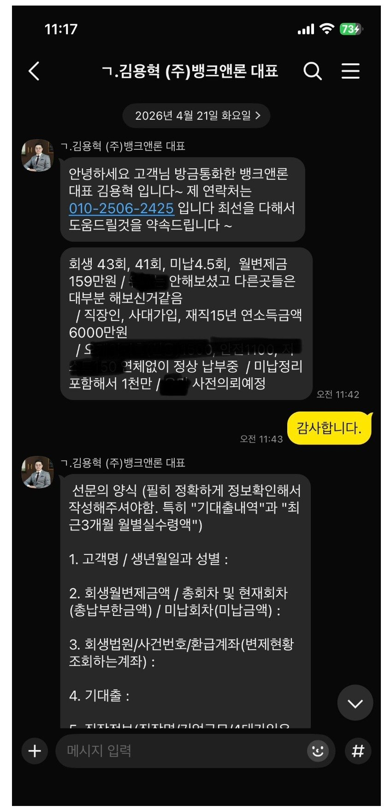
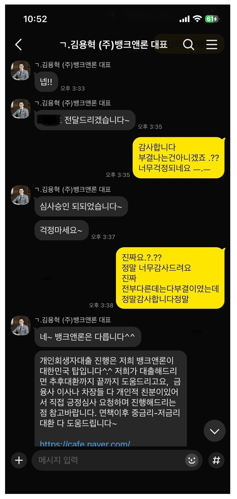
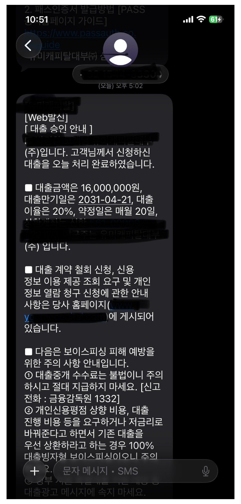
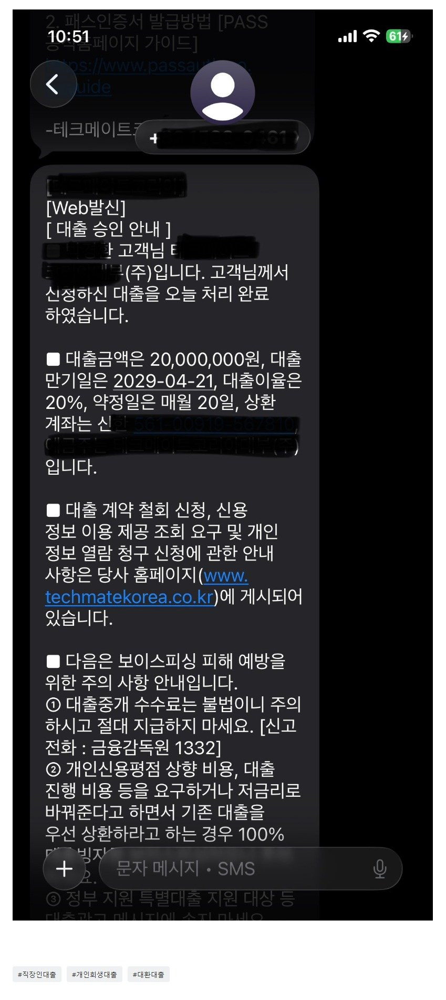

[개인회생자대출] 김용혁 대표님 이현섭 과장님 덕분에 목숨구제~~~
재직형태:직장인
재직기간:15년차
4대보험:유
소 득:연5900 실수령 390
신용등급:개인회생 43회차중
41회차(미납 4.7회)-월159만 납부중
채무내역:대부 2곳-1250 저축 1곳-1500
개인회생 미납-750
필요서류:신분증,원초본,건강보험 납부,득실확인서
급여통장 3개월 거래내역서
얼마전 개인회생 3회이상 미납으로 폐지될수 있다는
법원의 연락을 받았습니다.....
제대로납부 못한 제잘못이긴하지만 살다보면 정말
많은일이 있잖아요...이제 43회차중 41회차인데
미납으로 인해 폐지가된다면 정말 살아가기 막막할것
같았습니다. 그러던중
네이버 검색(개인회생 미납자대출)으로 찾던중
뱅크앤론의 후기를 보게되었는데....기존에 중개업체와는
다른 점들이 많아 지푸라기도 잡는심정으로
상담이라도 받아보자하여 상담신청을하게되었습니다.
저의 채무상태 재직 기간 소득등 말씀드리니
가능할것같다는 대표님 말씀에.....
다른중개업체에서 이미 부결났던적이 많은터라...
반신반의 하며 서류보내고 기도하며 기다리고있는데...
오후되서 대부2곳 저축1곳 미납금
대환조건으로 3600 승인나셨다는 말씀에 정말
날아갈듯이 기뻤습니다. 정말 너무 감사드립니다.
그리하여 미납금+기존대출통합 이모든게
오늘하루만에 실행되었습니다.
정말 김용혁대표님 이현섭과장님 신경써주셔서 너무너무
감사드립니다.
대환 만하다보니 여유자금이 부족하여 차주에
다시연락 드리기로 하였는데 그때도 추가승인나면
정말 좋을것 같습니다.
차주에 연락드릴께요 대표님~~
감사합니다. 정말정말




https://cafe.naver.com/cityman88/310909